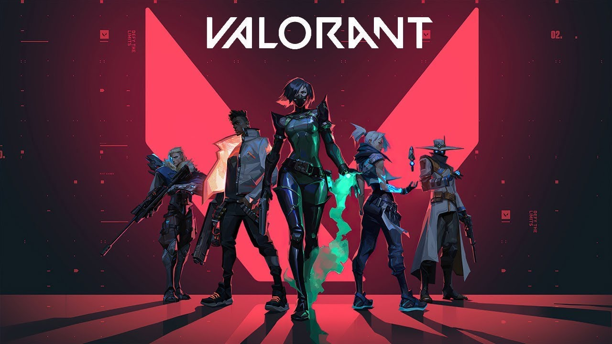
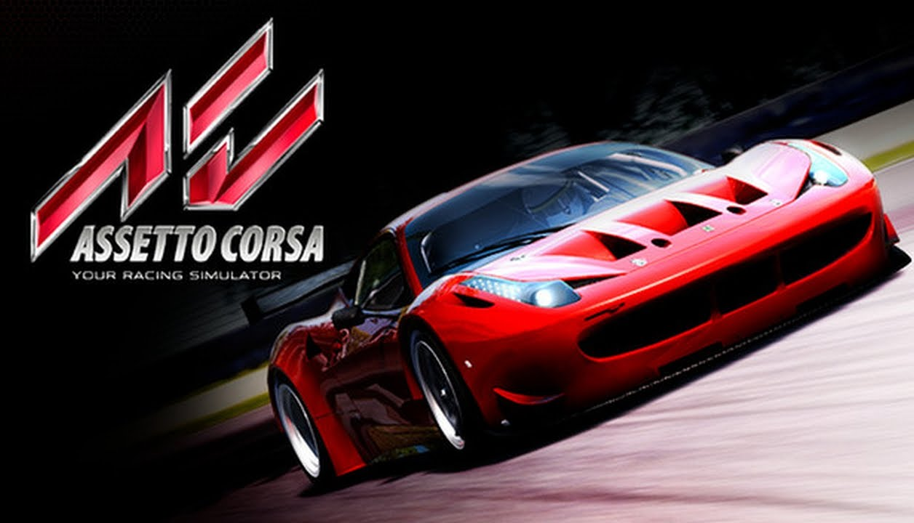

Hobbijaim.
Játékok
Játkok közül sok mindennel játszom peldául
Ezek közül a legtöbbet a Counter Strike: Global Offensive játszottam régebben, nyáron és a tanév elején kb semmit nem játszottam vele, de az utobbi időben újra elkezdtem és ugyanúgy élvezem mint régen.
 |
 |
 |
| Counter Strike: Global Offensive | F1 | Hearthstone |
|  |  |  |
| Valorant | Assetto Corsa | GTA V |